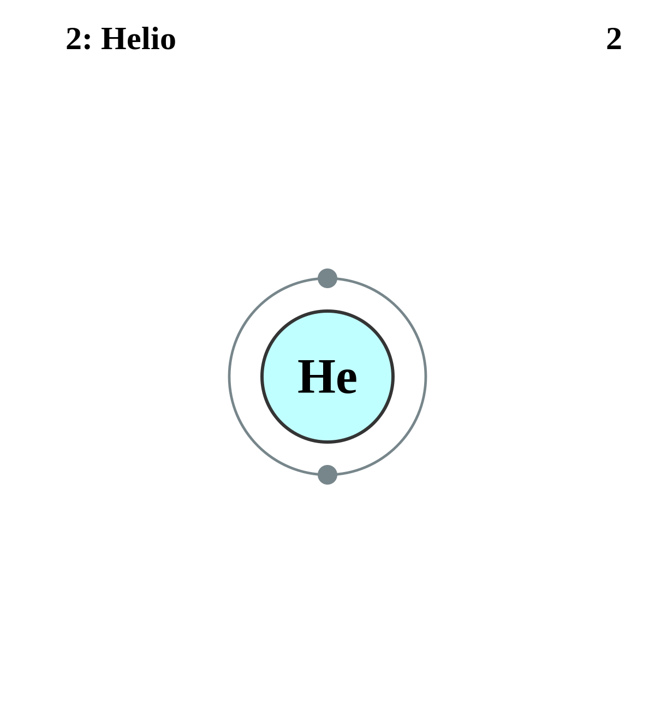

|
HELIO
Es el segundo elemento más abundante y se puede extraer a partir de gas natural.
El helio se emplea extensamente en el campo de la criogenia y en investigaciones de superconductividad. Permanece en su forma líquida hasta el cero absoluto, pero se solidifica rápidamente ante un aumento de presión. Se conocen siete isótopos del helio.
se utiliza en el crecimiento de cristales de silicio y de germanio, en las soldaduras por arco y en la producción de titanio y zirconio, para enfriar reactores nucleares y como gas en los túneles de viento supersónicos.
|
 |
DATOS
Número Atómico: 2
Peso Atómico: 4.0026
Electronegatividad: -
Configuración Electrónica: 1s2
Estados de Oxidación: 0
No. de Electrones de Valencia: 2
|